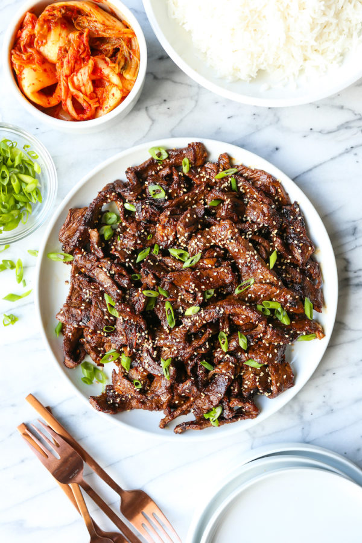

Home
Beef Bulgogi!

Ingredients
- One tray sliced hot pot beef (chuck or ribeye)
- Green onions
- 1 large onion (can also do 2)
- 3 tbsp soy sauce
- 3 tbsp Kikkoman Sweet Seasoning sauce
- 2 tbsp Korean plum extract
- 2 tbsp sesame oil
- 2 tbsp sugar
- Pinch of black pepper
- 1 tbsp sesame seeds
Steps
- Mix all sauce quantities together in a large bowl.
- Thinly slice the onions, as well as the green onions.
- Place half the sliced onions, and all the beef into the sauce bowl. Mix well and let marinate for 30 minutes.
- Pan fry the remaining sliced onions to taste. Do not cook for too long. Once done, place on plate.
- Once beef is done marinating, pany fry it all until cooked.
- Plate the beef, and top with green onions or additional seasme seeds.